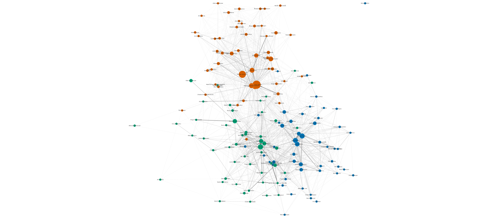

This page is a small practical exercise following Miriam Posner's tutorial
Publish your Cytoscape graph.
The network below was built, styled and exported in Cytoscape 3.10, then rendered here with Cytoscape.js from the two files Cytoscape produced: the network (network.cyjs) and the visual style (style.json).
The network
Nodes are people who took part in literary events in St. Petersburg. Two people are linked when they appeared at the same event. Each shared event with n participants adds 1/(n−1) to the pair's weight, so a small reading counts more than a large festival panel; weights are summed over all shared events. The full network has 10,656 people and 106,127 ties. Shown here are the 50 most connected members of three communities detected with the Louvain algorithm in the article, which correspond to well-documented aesthetic groupings of the city's literary scene. Node size follows degree in the full network; edge width and opacity follow the tie weight.
Key figures
| Community | Five most connected members (names as transliterated in the dataset, ALA-LC) |
|---|---|
| 0 · avant-garde poetry | Aleksandr Skidan, Roman Osminkin, Dmitriĭ Holynko-Volʹfson, Arkadiĭ Dragomoshchenko, Pavel Arsenʹev |
| 3 · thick journals | Valeriĭ Popov, I͡Akov Hordin, Aleksandr Kushner, Aleksandr Melikhov, Nikita Eliseev |
| 17 · new prose | Sergeĭ Nosov, Natasha Romanova, Pavel Krusanov, Aleksandr Sekat͡skiĭ, Boris Averin |
How it was made
- Data. Literary Events in Saint Petersburg (1999–2019) from SPbLitGuide Newsletters (Zenodo, CC BY 4.0): 15,012 events with participant lists, plus a table of 11,777 persons with VIAF and Wikidata identifiers.
- Network construction. A Python script (pandas, NetworkX) rebuilds the co-participation network from the event table and reproduces the figures in the article exactly. It then keeps the top 50 members by degree of communities 0, 3 and 17 and writes a node table and an edge table.
- Cytoscape. The tables are imported into Cytoscape 3.10.3, a style is defined (colour by community, size by degree, edge width and opacity by weight, transliterated labels), and the network is laid out with the edge-weighted Kamada–Kawai algorithm. Cytoscape is driven through its REST interface with py4cytoscape, so every step is reproducible.
- Publishing, option 1. A static image exported from Cytoscape (below).
- Publishing, option 2. The network exported as Cytoscape.js JSON and the style exported as “Style for cytoscape.js”, hosted in this GitHub repository and rendered by Cytoscape.js on this page. The CyNetShare service used in the tutorial is no longer online, so this page takes its place.

Tools used
- Cytoscape 3.10.3 and py4cytoscape 1.13 (import, styling, layout, export)
- Python 3.10 with pandas and NetworkX (data preparation, verification against the article)
- Cytoscape.js 3.30 (interactive rendering in the browser)
- GitHub and GitHub Pages (hosting the repository, the exported files and this page)
Read more
- Maria Levchenko, Computational Analysis of Literary Communities, Journal of Computational Literary Studies.
- Interactive exploration of all communities, venues and event types: literary-communities.vercel.app (source).
- This repository: github.com/mary-lev/spb-literary-network-cytoscape.